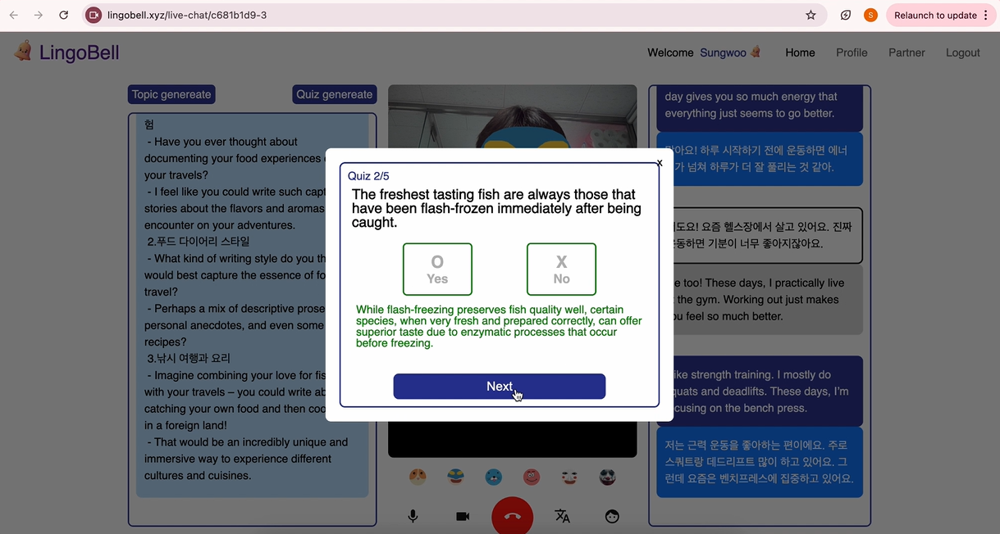

LingoBell
LingoBell은 글로벌 사용자를 대상으로 실시간 언어 교환을 지원하는 웹 플랫폼입니다. 이 프로젝트는 WebRTC와 STT, NLP 기술을 활용하여 사용자 간의 실시간 음성 대화를 텍스트로 변환하고, 이를 실시간으로 번역하여 상대방에게 전달하는 기능을 제공합니다. Google Cloud Platform(GCP)를 활용하여 GPU 서버 환경을 구축하고, WebSocket을 통해 클라이언트와 서버 간의 오디오 데이터를 실시간으로 주고받는 구조로 설계했습니다.
Technology Stack
React.js
Redux
Python
Whisper-streaming
WebSocket
WebRTC
GCP
WebRTC
MySQL
Firebase
Git
Notion
Figma
Key Features
- 실시간 언어 교환: WebRTC를 통해 두 사용자가 실시간으로 대화할 수 있으며, 음성 대화 내용이 실시간으로 화면에 보여집니다.
- 자동 번역: Google Translation API를 활용해 파트너의 모국어에 맞게 대화를 자동 번역합니다.
- 웹소켓 통신: WebSocket을 통해 빠르고 안정적으로 오디오 데이터를 전송하고 서버로부터 STT 처리된 텍스트를 전달받습니다.
- GPU 서버 구축: GCP의 VM 인스턴스를 활용해 GPU 서버 환경을 구축하여 높은 성능의 STT 서비스를 제공합니다.
Project Images
-

- 
-

Project Outcome
프로젝트 결과
LingoBell은 사용자의 언어 학습을 보다 효율적이고 실시간으로 지원하는 웹 플랫폼입니다. 다양한 기술 스택을 활용하여 실시간 언어 교환을 가능하게 하였으며, 사용자는 원하는 언어를 자연스럽게 학습할 수 있었습니다.